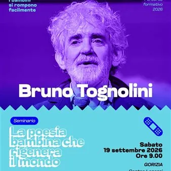

da sab 11 apr a sab 14 nov
I bambini si rompono facilmente 2026
Un percorso dedicato all’infanzia e all’educazione, con conferenze, laboratori e incontri per approfondire creatività, poesia, apprendimento e relazioni con i bambini.
 Indicazioni
Indicazioni
- Costi e prenotazioni
- Costo non indicato · Prenotazione sul sito di èStoria per i singoli incontri
- Programma
- Programma raccolto. Gli appuntamenti delle diverse schede sono riuniti in questa pagina.
- In caso di maltempo
- Nessuna indicazione specifica pubblicata.
- Note
- Le schede dei singoli appuntamenti sono state unite nella manifestazione principale.
L’EVENTO
Descrizione completa
La rassegna si rivolge a educatori e insegnanti dei servizi per l’infanzia, con attività di formazione dedicate a creatività, apprendimento e relazioni.
Conferenze, seminari e laboratori si tengono in sedi diverse. La prenotazione va effettuata per il singolo appuntamento sul sito dell’organizzatore.
A seguito della Lectio poetica tenuta venerdì 18 settembre da Bruno Tognolini, viene proposto oggi un approfondimento seminariale dal titolo "La poesia bambina che rigenera il mondo”.
Il seminario approfondisce ed espande la lectio del giorno precedente.
– si partirà con piccoli preziosi esempi in video e audio, dalle origini remote della poesia: la arcana “lingua paleo-bambinese”, un idioma sacro che “non vuol dire niente” ma finirà per dire tutto: nome per nome, l’intero mondo futuro in potenza.
– si passerà per le parole chimere, male assemblate, approssimate, che “provano a dire” abbozzando corrispondenze fra Suono e Senso, sbagliando e correggendo. Qui una piccola raccolta di “parole chimerine” renderà il cammino lieve e divertente.
– si arriverà ai sacrari protetti delle rime di gioco. Le lingue sacre materne, scacciate dall’apprendimento dei linguaggi profani paterni necessari alla vita, si rifugiano in queste invenzioni geniali: le rime POLPA , con una squillante collezione di rime orali registrate dal conduttore nelle scuole d’Italia.
IL PROGRAMMA
Programma e orari
Le singole date appartengono alla stessa manifestazione. Ogni sede verificata dispone delle proprie indicazioni.
11 aprile 2026
- 10:00–12:00 · Creatività e azione, Teatro Verdi di Gorizia.
- 14:00–18:00 · Seminari Creatività e Neurosviluppo 0–6 e Fare, fra divergenza e laboriosità, Centro Lenassi.
8–9 maggio 2026
- Percorso formativo con Alberto Cerchi al Centro Lenassi.
5–26 ottobre 2026
- Costruiamo un mondo di gioco, con Heart4Children, Palazzo Municipale di Cormòns. Consultare le singole date alla fonte.
15 ottobre–12 novembre 2026
- FotoColloqui e FotoIncontri, con Manuela Cecotti, Casa Maccari a Gradisca d’Isonzo. Consultare le singole date alla fonte.
22 ottobre 2026
- 16:30–19:30 · FotoColloqui e FotoIncontri, Casa Maccari.
30–31 ottobre 2026
- Il brutto disegno: al principio è lo scarabocchio, con PInAC, Centro Lenassi.
13–14 novembre 2026
- Alfabeti personali di Roberto Pittarello, Centro Lenassi.
Sabato 19 settembre · I bambini si rompono facilmente: "La poesia bambina che rigenera il mondo”
Gorizia · Centro Lenassi, via Vittorio Veneto 7
- A seguito della Lectio poetica tenuta venerdì 18 settembre da Bruno Tognolini, viene proposto oggi un approfondimento seminariale dal titolo "La poesia bambina che rigenera il mondo”. Il seminario approfondisce ed espande la lectio del giorno precedente. La lingua sacra delle…
INFORMAZIONI UTILI
Prima di partire
- Controllare la fonte prima di partire.
ORGANIZZAZIONE